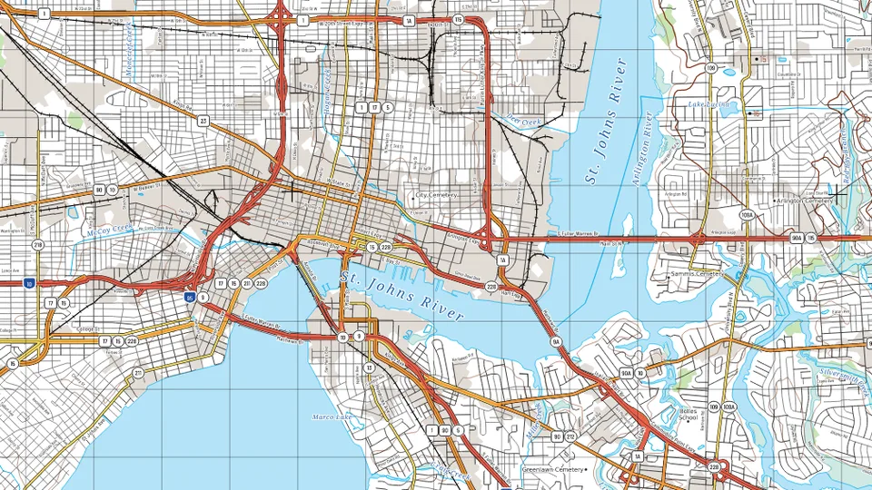
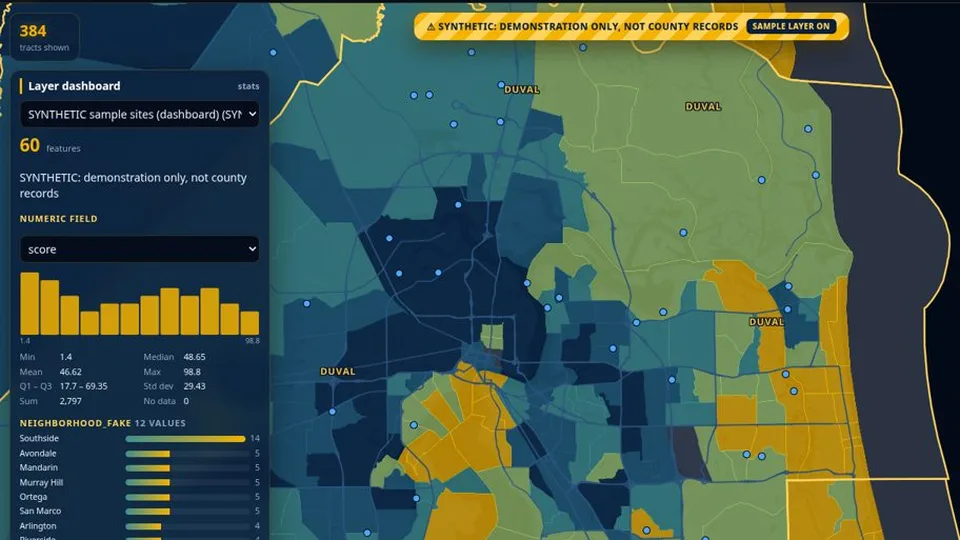
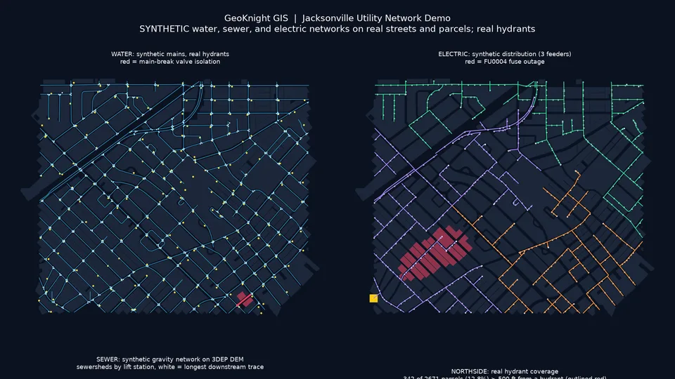
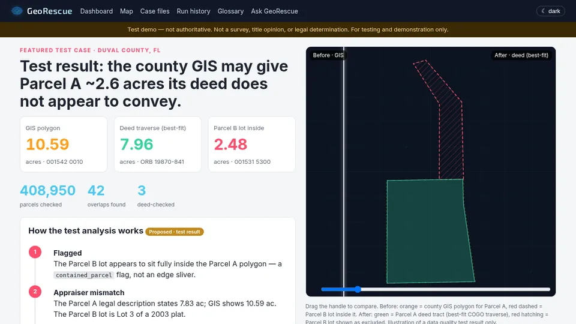
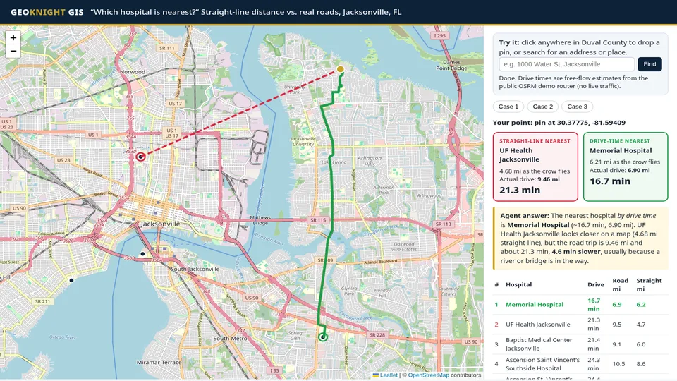
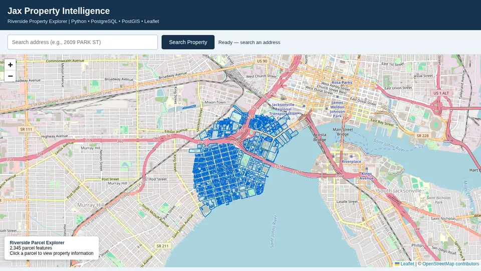
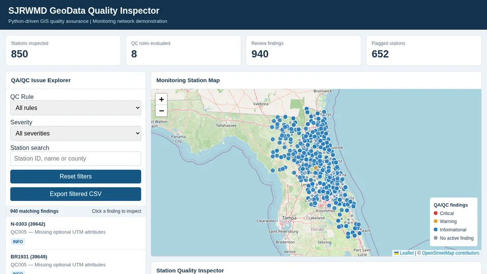
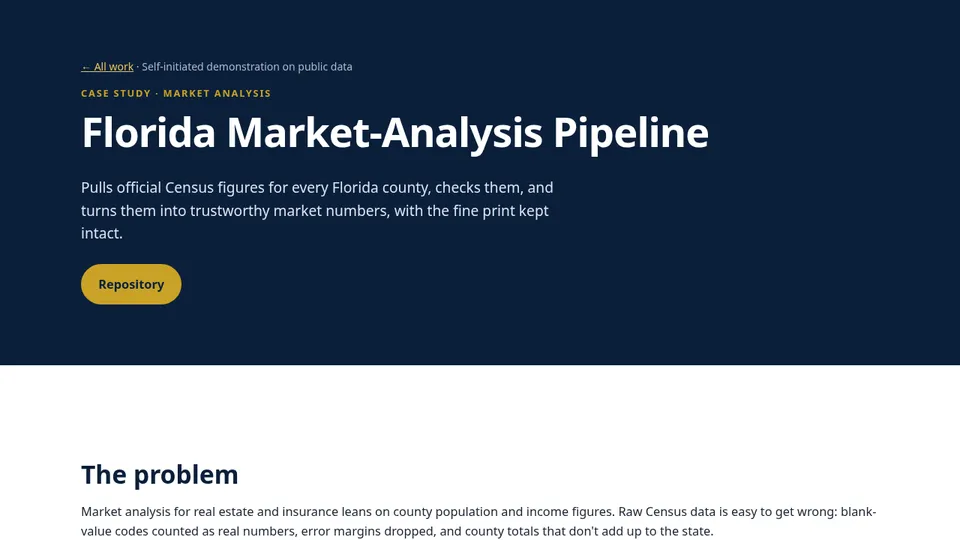

Custom maps
Clear, well-designed maps designed for your audience, on screen or in print.
GeoKnight GIS · Based in Jacksonville, FL · Serving clients anywhere
Interactive web maps, dashboards and map-based tools for businesses and government, anywhere.
Imagery: NASA Blue Marble & Black Marble via NASA GIBS · USGS The National Map · Clouds: NASA VIIRS · Live: USGS earthquakes & stream gauges · Day/night line from the real sun position · Ships, flights, launches, Gulf Stream and scan overlay illustrative, not live
New Featured service
Pick a point and get a TLM 50-style 1:50,000 sheet: contours, water, roads, power lines and hundreds of names, placed automatically from official public data.
What we build
Clear, well-designed maps designed for your audience, on screen or in print.
Shareable maps and dashboards your team can search, filter and explore.
Globes, terrain and 3D scenes that make location data easy to see.
Search, lookup and analysis tools built on your data, backed by automated data pipelines.
Pricing
Base rate
$95–$125/hr
For ongoing support, smaller fixes and work that's hard to scope up front. Most projects are quoted as a fixed price instead, so you know the total before any work starts. Scope changes are re-quoted.
$350
Fixed price
Optional hosting: $50/mo
A clean, shareable web map of one dataset: parcels, sites, listings or service areas, with popups and a mobile-friendly layout.
Most requested
$1,500–$5,000
Fixed price, by scope
Optional hosting: from $150/mo
A dashboard, map app or map-based tool built around your data and workflow, with search, filters, charts and built-in checks.
from $5,000
Fixed price per milestone
Optional hosting: from $400/mo
Automated loads that pull, clean, check and join your sources, such as assessor, permit, flood and census data, and feed your maps and systems.
Custom quote
Scoped with you
Not sure what you need, or it doesn't fit a box? Tell me about your data and goal, and you'll get a fixed quote before any work starts.
Integrations: connect your maps to the systems you already use (CRM, permitting, asset or work-order systems, databases, APIs and data syncs). Quoted per project.
Host an existing app? Ask for a quote.
Book a callButtons open a short request form. Prefer email? Write to info@geoknightgis.com; for large data, share a link.
Project prices are one-time. Hosting is optional, billed monthly, and setup is included when we build it. Includes monitoring, backups, security updates and cloud costs up to a set limit; usage above that is billed at cost plus a small margin. 10% off annual hosting.
Work
Selected projects. Figures come from each project's public README or page.

Built in-housePrint cartography
Live demo3D globe · dashboardScreenshot shows Census data and a synthetic sample layer only.

Live demoNetwork analysis · utilitiesPipe and wire networks are synthetic (JEA does not publish them); streets, parcels and hydrants are real public data.

Live demoParcel QC · before/afterTest demo, not authoritative: not a survey, title opinion or legal determination.

Drop a pin in Jacksonville: an AI agent ranks 11 hospitals by real drive time, not straight-line distance across the St. Johns River.

County parcels cleaned and matched to FEMA flood zones and sales history: 405,722 properties in one checked table.

850 stations checked against 8 rules; 940 findings logged for review. Public SJRWMD open data; not affiliated with or endorsed by SJRWMD.

Census figures for all 67 Florida counties, with margins of error kept and totals checked against the state.
Contact
Send a short note about your area, your data and what you need. I reply by email, usually within one business day, or you can book a call directly.